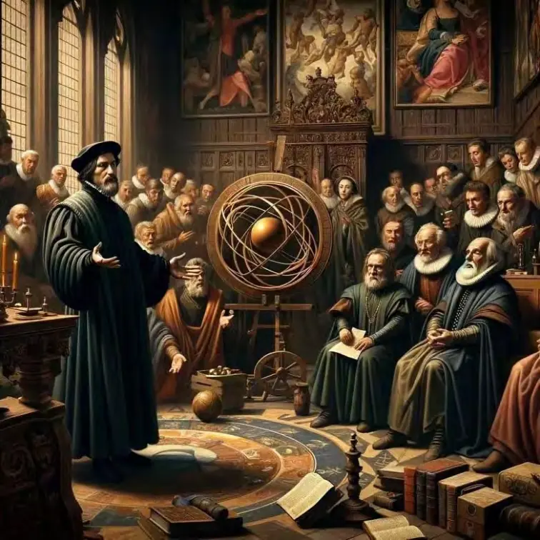
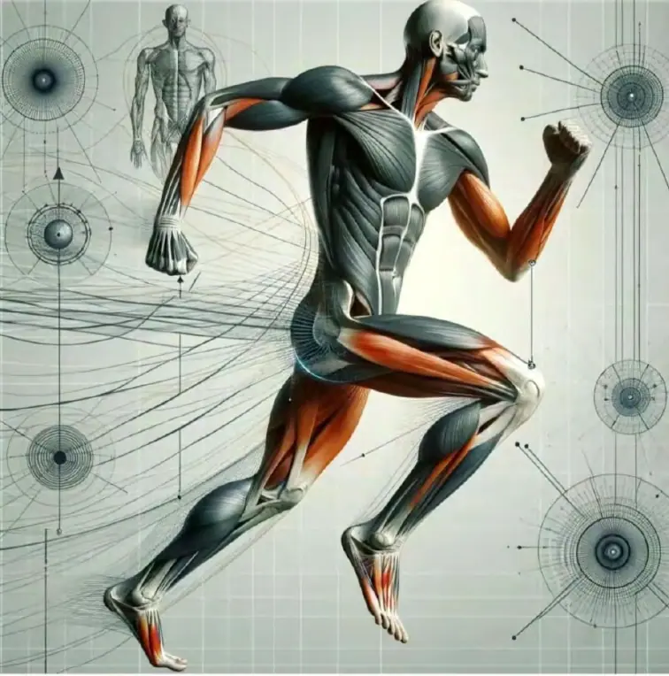
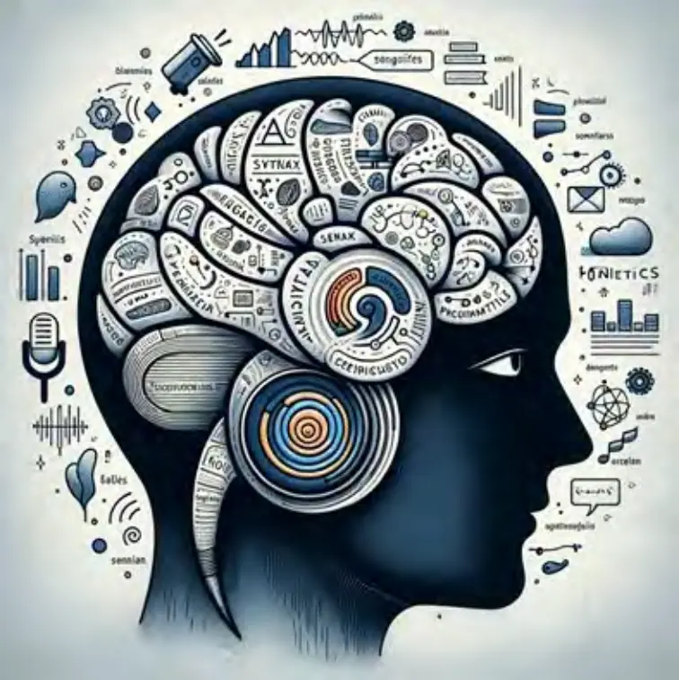
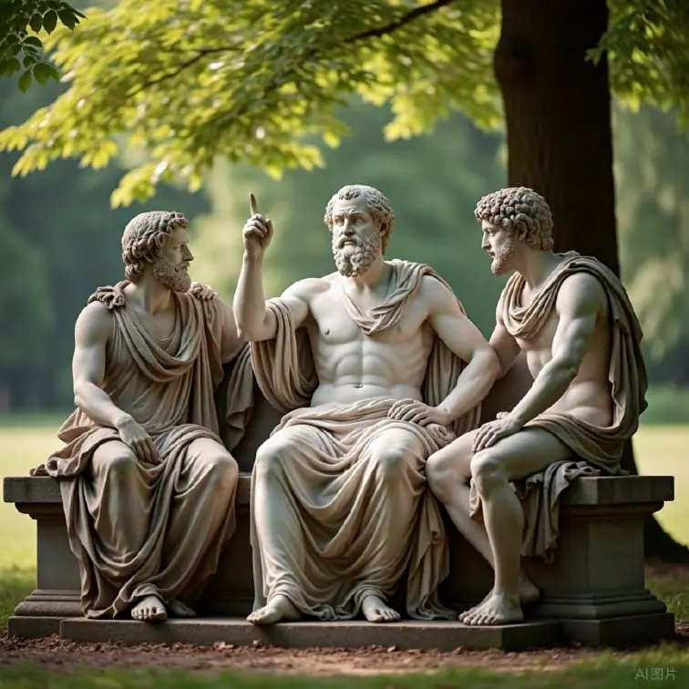

主客互动与意义三律视角下的生成哲学研究
——论张力、纠缠与混沌如何塑造创新的发生场
摘要
传统哲学、心理学乃至教育学对“创造力”的研究，长期受限于“主体中心论”的视角——将创造力视为主体个体内部的一种能力、禀赋或灵感的自然流露。这种观点强调天赋的差异性、思维的灵敏度或潜意识的偶发闪光，但普遍忽略了创造力发生所依赖的真实生成场域——即主体与客体之间的互动结构（SIO）及其在动态张力中的涌现机制。
本文在此背景下，基于主客互动本体论（SIO Ontology）与意义三律理论（特征律、自由律、幸福律）重新提出一个根本性命题：创造力并非生于资源充裕与环境优渥，而是根植于匮乏与张力之间，在互动结构的崩塌与重组中生成。匮乏不是创新的阻力，而是生成创新的核心“动力源”，是旧结构解体与新秩序萌芽的临界状态。
在主客互动哲学中，“匮乏”不是物质或知识的静态不足，而是S（主体）、I（互动路径）、O（客体）三者之间连接关系的失衡或断裂。这种断裂导致幸福律（即互动张力的有序释放）失效，从而积聚出高强度的张力场。主体在张力无法释放的状态下，被迫启动自由律的运行，即重新构造新的互动路径与组合方式，进而激活创造性潜力。这种由张力逼迫而非自主选择展开的自由律运行，正是创造力的第一生成机制。
而当张力持续积累，新旧路径纠缠交织、原有结构解体，新结构尚未稳定时，系统进入一种“混沌态”。这种混沌状态并非无序，而是一种高敏感度、高反馈性与高涌现力共存的边界场。在此状态中，特征律开始发挥作用，即筛选出可稳定重复的新互动特征，最终使创新得以诞生并固化为一种新的主客互动结构。
本文称这一过程为“匮乏—张力—纠缠—混沌—创新”的五阶创造发生机制，并通过大量历史、科技、艺术与社会变革的实例加以印证，如：贝多芬在耳聋状态中完成《第九交响曲》、中国改革开放起源于饥饿农村的非法试验、乔布斯在流放期间酝酿Mac OS原型、印象派画家在学院拒斥下展开户外光影探索等。这些案例皆指向一个共同逻辑：创造从不是“拥有更多”的结果，而是“不得不另辟蹊径”的产物。
在SIO结构与意义三律的哲学框架中，创造力的发生被重新定位为一种主客互动结构的断裂与重建过程，而不再是心理学层面所谓“灵感”的闪现。创造力是SIO系统在张力驱动下，穿越混沌、形成新结构的一次系统性演化，是意义系统（真、善、美与创造、自由、幸福）的新生涌现。因此，真正理解创造力，就不能再将其归结为“脑内机制”或“教育灌输”，而要深入分析其在现实世界中如何通过“互动张力”生成并得以组织化。
本文的哲学意义在于：从根本上纠正了对创造力发生机制的误读，构建出一个基于主客互动动态生成论的创新哲学结构；其实践意义在于：为教育设计、科技激励、社会制度与艺术生成提供了可操作的张力场建构策略。只有真正看见匮乏、理解匮乏、进入匮乏，并在其中构建出自由律与特征律的运行通道，创造力才能真正地被点燃、成长并转化为推动文明的结构性力量。
一、引言：打破“资源越多越创新”的迷思——从表象逻辑到生成哲学的转向
1. 主流误解：资源充裕与创造力之间的虚假因果
在当今知识经济与创新驱动成为全球共识的时代，“创造力”几乎被视为人类最高层级的认知与文化能力。从谷歌办公室的滑梯与自由午餐，到设计思维教育的风靡，从城市更新中的“创意产业聚落”到政策层面对“创新生态系统”的投资，主流社会对创造力的推崇，已经演化为一种文明发展共识。
然而，在这波热潮之下，隐藏着一个巨大的逻辑迷雾：
创造力需要资源支撑，资源越多，创新越多。
这一观点虽然表面上符合理性与经验主义的推演，但它忽略了一个基本事实：绝大多数历史性创造的发生，并不是在“资源极大化”中出现的，而是在“资源极度稀缺”与“互动结构断裂”之际被逼生成的。
这就是我们所谓的“后果归因谬误”（Post Hoc Fallacy）：
我们看到伟大创新者后来拥有了资源，就误以为他们的创造力来源于资源。
但实际上，真正孕育他们创造的，是曾经在资源崩塌、意义失效与互动路径断裂的状态中，生成了新的路径、新的秩序、新的结构。
2. 历史中的匮乏诞生：创造的真实发生地
我们不妨以几个典型历史事件来揭示这一深层机制：
例一：亚历山大·弗莱明与青霉素的意外发现
1928年，英国细菌学家弗莱明在实验室中的“混乱”状态下，发现了青霉素的抗菌效应。人们通常强调这是一次偶然性的“灵感时刻”，但若仔细追溯背景可知——这是在第一次世界大战后医疗资源极其匮乏的状态下，实验材料与研究条件都极为简陋，逼迫科学家不断重复使用过期的培养皿、实验布料，最终“错误”地保留了发霉的培养皿，从而诞生了人类历史上最伟大的抗生素之一。
例二：梵高的《星夜》与艺术极限
《星夜》并非创作于艺术学院的阳光工作坊，而是画于圣雷米精神病院的一间小屋中。当时的梵高精神病发作频繁、缺乏画具，甚至只能使用有限的颜料和破旧的画布。他的匮乏不仅是物质的，更是认同的匮乏、社会的边缘化、与主流艺术界的脱节。但正是这种彻底失联的互动断裂，使他摆脱传统写实主义绘画束缚，进入一种高度主观、神经质而流动的视觉创造模式，形成震撼后世的星空旋律。
例三：中国改革开放的“非法诞生”
1978年，在中国安徽凤阳小岗村，18户农民秘密签署分田包产协议，把集体土地分为私户经营，这一“违法”的行为，正是因严重的饥饿和死亡威胁所逼。他们面临的是结构性匮乏——制度无效、合作社机制失败、中央粮食征购沉重压迫。在这种极限张力下，一种全新的互动结构（“主体-土地-收益”之间的责任连接）悄然发生。这个被称为“包产到户”的创造行为，最终演变为中国经济改革的起点。
例四：哥德尔不完备定理——逻辑系统内部的崩塌点
在1930年代，数学与逻辑界仍沉醉于希尔伯特形式系统的“完备与一致性”幻想。哥德尔在资源条件并不优渥的大学中，几乎靠自学深入元数学与形式逻辑。他不是沿着“逻辑系统的清晰路径”推进，而是在逻辑系统内部张力最强的“自指悖论”中深挖，最终以不完备定理一举击溃了形式主义的神话，拉开了后现代知识哲学的序幕。哥德尔的成功，不是因为逻辑体系“资源充足”，而是他从崩塌结构中逼迫出一个新的思维通道。
3. 匮乏不是障碍，而是生成机制的“主语”
以上例子只是冰山一角。在科技、哲学、宗教、艺术、政治、心理等几乎所有文明核心领域中，创造力的真正发生点从不在“丰富之地”，而是在匮乏之处。然而，人们通常看到的是结果：诺贝尔奖、画展、体制改革、新理论的发布，而忽视了这些结果的“发生地”，几乎总是在极端结构张力与互动崩溃的场域中产生的。
换句话说：
匮乏不是创造力的敌人，而是其本体性土壤。
它不是外在条件的限制，而是一个互动关系系统的破裂与重组的临界点。也就是说：
匮乏不是“没有”，而是“旧的SIO连接模式已失效”；
匮乏不是“需要补足”，而是“需要重组”；
匮乏不是“静态的空”，而是“动态的张力源”；
匮乏不是“终点”，而是“重新开始的起点”。
一、4. 传统逻辑误导：线性理性 vs. 生成结构
我们为何会长期误解“创造力来自资源充裕”？本质上，是因为我们深受西方线性逻辑与工具理性哲学的长期影响：
| 思维模式 | 传统线性观 | 生成结构观（SIO+三律） |
|---|---|---|
| 创造力来源 | 主体内部天赋或灵感 | 主体-客体-互动之间的结构张力 |
| 创造力场域 | 舒适、自由、资源充足 | 匮乏、崩溃、路径断裂 |
| 创造力表现 | 灵感的闪现，能力的释放 | 主客互动中结构重组的结果 |
| 创造机制 | 演绎/归纳/比喻 | 张力 → 纠缠 → 混沌 → 重组 |
| 创造的意义生成 | 结果导向（“产品” 、“成果”） | 结构导向（“新的SIO 系统的诞生”） |
因此，本文不仅是一个“理论视角”的转换，更是一个哲学范式的革命。我们必须从“资源→产出”的线性思维，转向“张力→生成”的互动结构思维；必须从“主体中心”转向“主客互动中心”；必须从“结果崇拜”转向对“生成过程”的深刻敬畏。
5. 研究框架预告：从匮乏到创造的五阶生成机制
为了系统性地阐述创造力如何在匮乏中诞生，本文将引入主客互动本体论（SIOOntology）与意义三律理论（特征律、自由律、幸福律），构建如下五阶生成模型：
1. 匮乏：主客互动路径断裂，系统进入结构失衡状态；
2. 张力：幸福律无法运行，张力持续堆积，主体压力上升；
3. 纠缠：自由律激活，系统开始尝试新的互动组合；
4. 混沌：旧路径解体，新路径尚未稳定，系统进入高不确定性场；
5. 重组与创新：特征律运行，筛选出可重复的新结构，构成创新SIO。
这一结构不是心理学层面的“创造力描述”，也不是逻辑学中的“思维模式”，而是真正将“创造发生”作为一种存在论过程进行哲学性重构。在后续章节中，我们将通过丰富实例与理论深化，对这一模型进行完整展开。
6. 响应现实：教育、技术、文化为何走入创造力困境？
最后我们必须追问：为何当代社会投入如此巨大的资源，反而普遍感受到创造力的稀缺？
这正是因为我们误将“资源”当作“创造的本体”，却忽略了“匮乏张力”这一必不可少的生成机制。一切教育制度的失败，一切技术研发的困顿，一切文化创造的干涸，往往不是缺乏资源，而是缺乏真实的结构张力场，缺乏在崩溃边缘的路径重组能力，缺乏对混沌生成的容忍度，缺乏对非线性发生机制的哲学理解。
因此，本文不仅试图说明“创造为何来自匮乏”，更试图指出：没有匮乏，就没有张力；没有张力，就没有创造。
二、匮乏的本质：不是缺少资源，
而是主客互动的结构断裂
2.1 匮乏的“本体性误解”：从“没有”到“失联”
传统观念认为，“匮乏”就是“没有”：没有金钱、没有食物、没有机会、没有时间。这种理解隐含一个“客体中心主义”的偏见，即：如果我所要之物不在，那就是匮乏。
例如：
口袋里没有钱，被定义为“贫穷”；
家中没有食物，被定义为“饥饿”；
桌上没有书籍，被定义为“缺乏知识”。
这种定义模式虽然直观，却遮蔽了更深刻的事实：人类之所以感到匮乏，不是因为“没有”，而是因为“连接失败”。
这一点，必须在主客互动本体论（SIO Ontology）中得以彻底重构：
匮乏 = S（主体）- I（互动）- O（客体）三元结构中的连接被阻断、错位或解体。
匮乏不是物体的缺席，而是路径的崩坏；不是东西不在，而是通路不通；不是单纯“资源不足”，而是“主客之间无法完成交互”的互动性崩塌。
2.2 理论定义：匮乏 = SIO结构的张力性断裂
在SIO视角下，匮乏的哲学本体定义可以如下表述：
匮乏，是SIO三元复合体中任意一条主客互动路径的断裂、退化或不可达，从而导致意义系统无法持续运作，幸福律被抑制，自由律被压制，特征律失效。
这一定义包含几个关键特征：
| 特征维度 | 描述 |
|---|---|
| 结构性 | 匮乏不是孤立存在，是三者互动失败的结构性结果 |
| 动态性 | 匮乏是动态生成的，可能因新变化、新环境而被激活 |
| 张力性 | 匮乏会导致系统失衡，从而激发强烈张力并孕育生成可能 |
| 方向性 | 匮乏指向新的结构诉求，激发重构欲望，是动力源而非终点 |
这一结构性定义使我们得以解释许多“看似资源充足，实则深陷匮乏”的现实现象。
2.3 举例展开：看得见的资源，看不见的匮乏
案例一：农民在土地制度下无法自由耕种
表面资源：土地在，劳动力在，工具在
实质匮乏：SIO中“合法耕作权路径”被断裂
匮乏表现：无效劳动、低产出、内卷、抵抗
许多国家的农业现代化改革迟缓，不是因为农民懒惰或土地荒芜，而是因为主体（农民）与客体（土地）之间的互动路径——制度合法性与收益归属机制—被政治或经济系统切断。主体在结构中丧失了操作主权，哪怕拥有客体，也无法进行真正的“互动”。
案例二：贫困学生无法进入高阶学习系统
表面资源：学校存在，课程存在，互联网存在
实质匮乏：SIO结构中“知识吸纳与反馈通路”被切断
匮乏表现：理解障碍、学习焦虑、认知自卑
一个学生即便接触到世界一流课程（例如MOOC平台），如果他没有基本的阅读能力、没有能回应的师长、没有训练过逻辑思维能力，他仍然无法与知识系统形成真正互动。匮乏存在于主客之间缺失的“支撑性互动结构”中。
案例三：失恋者的痛苦源于“通路”崩塌
表面资源：爱存在，回忆存在，曾经拥有一切
实质匮乏：主客互动的“情感回路”崩溃断裂
匮乏表现：认知混乱、自我瓦解、存在失重
在情感关系中，失恋造成的并非“爱”的消失，而是“爱之互动结构”的塌陷。即主体已无法与原有客体形成意义连通的路径，其整个感知结构、存在方式和未来想象都同时崩溃。这种匮乏，是意义通道的塌陷，而非“情感实体”的丧失。
2.4 匮乏的“隐性存在”：资源丰富，互动贫乏
现实中最危险的匮乏，不是“赤贫式”资源枯竭，而是“富裕型”互动瓦解。许多现代人并不缺乏金钱、物资、资讯，但却陷入深度的精神匮乏、意义匮乏与存在匮乏。这些匮乏在表象上难以觉察，却在结构上极为致命：
案例一：高薪白领的“结构性匮乏”
资源上拥有房产、名校学历、稳定收入
实际上缺乏真实互动、认同连接、自我建构
匮乏表现：心理焦虑、职业倦怠、价值崩溃
这是一种SIO失衡的慢性病——有O（物质客体），有一定S（表面主体性），却缺乏深度的I（真实互动）：与世界、他人、自己之间的真实流动消失。
案例二：城市孩子的“感知匮乏”
玩具、教材、培训班一应俱全
却缺乏自然感知、动手体验、人际共鸣
匮乏表现：情绪单调、感受迟钝、行为僵化
匮乏不在资源上，而在“与世界互动的方式”上。这种孩子可能见多识广，却缺乏真正“生成过”的经验结构——他们的SIO系统是信息灌输型，而非互动生成型。
2.5 匮乏的哲学机制：意义中断，张力涌现
当我们说“匮乏”，实际指的是：
意义系统的运行断层；
幸福律无法释放；
自由律被压抑；
特征律无效生成。
这一切导致系统进入一种极端张力状态：既不能返回旧结构，又无法生成新结构；既无释放出口，又不断积压压力；既无行动意义，又无法退出系统。
在这种状态下，“匮乏”就变成了创造发生的预条件，是涌现新的SIO结构的引爆点。
2.6 哲学重构：从“匮乏＝少”到“匮乏＝不可通”
我们可以系统性地用下列表格对比传统与SIO视角对匮乏的理解：
| 理解维度 | 传统资源论 | SIO结构论（主客互动论） |
|---|---|---|
| 匮乏定义 | 没有资源、数量不足 | 主客互动结构断裂，路径崩坏 |
| 问题定位 | 寻找缺失物，进行补足 | 寻找结构张力与互动堵塞点，进行重构 |
| 应对方式 | 资源再分配、外部援助 | 内部结构重组、路径创新 |
| 创新可能性 | 受限：解决匮乏就是填补缺口 | 高可能：匮乏就是张力源，是生成结构的温床 |
| 存在方式 | 客体中心、静态理解 | SIO中心、动态理解 |
因此，匮乏不是“物的负数”，而是结构的断裂，是路径的丢失，是互动的失能，是存在的“无法达成状态”。
2.7 启示意义：创造力教育与社会治理的误区
当我们从SIO结构视角重新理解“匮乏”的本质，就会发现当代社会中许多关于教育、治理、科技创新的主流路径，实则深陷“错误的匮乏定义”：
学校教育中强调“补习资源”，而忽略了学生“与知识之间真实交互结构”的重建；
政府扶贫中强调“资金投放”，却忽视了主体“自主发展路径”的建立；
企业创新中强调“技术堆叠”，却忽视了团队“结构张力”的组织与管理。
这些做法都试图“填补资源的洞”，而非“打开互动的口”。
只有重新理解匮乏的真实本质，才可能：
在教育中真正激发学生的“意义构建”能力；
在制度中形成“可生长的参与结构”；
在创新中发现“危机的缝隙处就是创造的门户”。
2.8 结语：匮乏即开始，断裂即生成
当我们终于意识到——匮乏不是“资源的消失”，而是“结构的破裂”；不是“贫穷的状态”，而是“意义通道的中断”；不是“终结的信号”，而是“生成的起点”，我们就能够在这座哲学地基上，重新建立一个关于创造力、创新结构与文明演化的全新理论体系。
因此，真正的问题不是“如何摆脱匮乏”，而是：
如何在匮乏中识别断裂点，激发新的张力通路，构建崭新的SIO结构，从而走向创新的下一阶段。
这正是下一章要展开的：“张力：幸福律被阻断后，创造的能量如何聚集”
三、张力的涌现：幸福律受阻时，释放成为刚需
——从压抑到生成，从和谐幻觉到创造能量
3.1 幸福律的本体地位：一切存在都追求张力释放
在意义三律中，幸福律是最容易被误解、却又最贴近人类经验的一条法则。
所谓幸福律，不是主观情绪的愉悦体验，而是：
主客互动（SIO）系统中积压的张力，能够沿着可行路径被有序释放，并使结构趋向更加协调、流动、更新时，主体感受到的一种“被激活的安宁”。
幸福，不是宁静本身，而是冲突得到解决后、意义重新贯通的那一刻的颤栗与涌动。
幸福律的运行，不是消灭张力，而是引导张力走向释放，像春天的融冰、雷雨后的晴空、长跑后的深呼吸。正因为张力存在，幸福才可能产生；没有张力，幸福律将无从谈起。
然而，一旦幸福律无法运行，SIO系统将进入压抑、堵塞与紧绷状态。此时，张力不断堆积，在没有释放出口的前提下，整个系统便逼近“崩溃临界点”或“突破生成点”。
这种时刻，就是创造发生之前的黑暗地带，是一切创新的燃点所在。
3.2 张力的结构本质：不是对立，而是无法通
张力的本质，并不是矛盾对立本身，而是主客之间已有互动路径无法释放这个矛盾。
它不是“不同”，而是“不同无法对话”；
不是“冲突”，而是“冲突被压抑、无法流动”；
不是“分裂”，而是“分裂没有表达的机制”。
从SIO结构角度来看，张力的产生源于以下几种情况：
| 张力类型 | 对应断裂结构 | 示例 |
|---|---|---|
| 认知张力 | 主体对客体的认知无法转化为操作路径 | 一个学者明知现有理论有误，却无法提出新框架 |
| 情感张力 | 主体感受无法转化为有效互动 | 爱而不得，恨而不能言 |
| 制度张力 | 互动规范对主体需求进行压抑性设限 | 创新项目遭遇僵化审批流程 |
| 存在张力 | 主体对自身存在方式产生异化与否定感 | “我是谁”的疑问在体系内无法获得响应 |
张力从来不是“敌人”，而是创新的“压缩能量”，其释放与否决定了系统是否能够向新状态转化。
3.3 历史中的张力爆发：当幸福律终止运行时
例一：马丁·路德·金与种族张力的政治释放
20世纪中期，美国黑人社会面临的并非只是“平等权利的缺失”，而是一种全面的张力封锁——
主体性被否定（不被当作完整的“人”）；
客体制度不回应（法律结构不认同其正义诉求）；
互动路径被压制（游行、请愿、投票机制被技术性封堵）。
这个SIO结构彻底断裂，幸福律完全失效。
于是，一种新的能量在地下积蓄。1963年，马丁·路德·金站在林肯纪念堂前说出“I havea dream”时，释放的不是一个“理想主义句子”，而是张力积压到极致后的文明喷泉。他把压抑转换为希望，把沮丧变为动员，把无声转化为话语，把群体结构的扭曲变成结构的重新生成。
他的演讲不是单纯呼喊，而是幸福律重新启动的召唤。
例二：贝多芬与《第九交响曲》中的爆裂性释放
贝多芬失聪以后，并未陷入沉默，而是迎来创作的巅峰期。
这是一种何其典型的“幸福律受阻”状态：
作为作曲家的核心互动（听觉与音乐）被切断；
与观众、乐手、世界的连接感遭遇结构性瓦解；
自我表达的路径进入混沌。
但他没有在张力中破碎，而是在张力中突破。他的第九交响曲，不再只是旋律结构，而是一种结构性的重组，一种将音乐转化为精神结构、将痛苦转化为普世欢乐的奇迹。
其终章《欢乐颂》，不是“喜悦”，而是“深度张力的释放之歌”。
3.4 中华文化与“张力回避”的传统性问题
在中华文化的历史深层结构中，有一个令人深思的特征：对“张力”倾向性地回避、压制与涂抹。
（1）儒家伦理中的“和而不争”观
孔子曰：“礼之用，和为贵。”这种“和”的文化精神，在处理人际关系、政治冲突、思想分歧时，往往转化为“避免激烈表达”、“回避深层对抗”、“维持表层安稳”。
这种和谐主义在短期上有稳定效果，但长期将产生一个巨大副作用：
张力被系统性压抑，幸福律被阉割，创新能量被吞噬。
中华文化的张力通常被视为“混乱”、“不祥”、“失德”，而不是“创造前的必要爆破”。
（2）心理结构上的“安稳取向”
华人家庭教育普遍强调“安全”、“稳定”、“听话”、“不要冒险”。孩子在表达情绪、提问权威、质疑教条时，往往遭遇“降温性语言”：
“别太激动”；
“你想太多了”；
“这事你不懂”。
这些话语背后，是整个文化对“张力”的深度恐惧——不敢让结构撕裂，不敢容忍混乱，不敢面对崩溃。
张力，在中国文化中，是被排斥的“他者”。
这导致一个显著结果：匮乏存在，却被遮蔽；压抑积累，却不转化；创造需求，却无路径。
于是，文化内在的幸福律长期受阻，社会系统陷入“稳定幻觉”中，创造力被层层封存在“张力禁区”中，无法运行。
3.5 为什么张力不能被消除？——它是创造的预备能
从生成学视角来看，张力不是可以“化解”的负能量，而是一种不可省略的创造前阶段。
就像水必须沸腾才能蒸发，光必须折射才能穿越介质，创造必须经过张力才能进入生成。
张力是系统的不适，是结构的不满，是意义的失衡，是自由的挣扎——而正是这些，使系统具备自组织、自突变的可能。
SIO哲学中张力的四重功能：
1. 诊断功能：揭示结构中的堵点；
2. 能量功能：激活系统内的转换驱动；
3. 流通功能：促发新的交互路径；
4. 创新功能：构成结构突破的初始通道。
张力不是敌人，而是“结构的拷问者”。
3.6 当代中国的“创造力困境”：张力结构的系统性压制
我们可以从制度、教育、媒体、家庭四个层面，快速扫描中国社会对张力的系统性压制：
| 层面 | 张力压制机制 | 创造力后果 |
|---|---|---|
| 制度 | 官僚层级化、审批制度、风险惩罚机制 | 创新者变得谨小慎微，不敢突破 |
| 教育 | 标准答案、应试系统、批判性思维缺位 | 学生被驯化为“答题机器” |
| 媒体 | “和谐叙事”、压制矛盾、“正能量”话语控制 | 社会无法真实对话，深层矛盾被粉饰 |
| 家庭 | “乖孩子文化”、“听话比表达重要” | 孩子缺乏表达张力、独立思辨与情感弹性 |
因此，我们看到的“创造力匮乏”现象，并非主体不聪明、资源不充足，而是整个系统将张力视为“灾难”而非“通道”，使幸福律被长期抑制。
3.7 如何重新激活幸福律？——让张力成为系统的“生成燃料”
真正解决创造力困境，不是“减少张力”，而是正面接住张力，并组织其有序释放。
这需要三方面的策略：
（1）认知上：重新定义张力为“潜能”
张力不是问题，而是能量形式。我们需要在意识中彻底完成一次“哲学翻译”：
挫折 = 结构更新的前奏；
争执 = 意义差异的显现；
不适 = 旧结构的松动信号；
情绪 = 意义被阻断的预警系统。
（2）制度上：设立“张力通道机制”
在教育中鼓励对抗性辩论、反对意见表达、失败经历分享；
在组织中建立“张力审计”机制，即发现流程中不能流动的交互点；
在治理中开辟“结构试错区”，即允许新制度在小范围内失败与测试。
（3）文化上：恢复“生成美学”
我们需要创造一种新的文化意象：张力不再是“混乱”，而是“生成的舞台”；不再是“失控”，而是“转化之门”。
这正是“意义型文明”的基础之一——将张力视为意义的门户，而非意义的崩溃。
3.8 结语：张力不是痛苦，是创造力的祈祷词
在人类的每一次创造奇迹发生之前，张力都是先知。
从贝多芬的第九，到哥德尔的崩溃边缘；从马丁·路德·金的街头集会，到基层农民的不合时宜的分田行为——每一个新的SIO结构的诞生，都是在幸福律被阻断的张力场中，用压抑换来的转生，用黑暗召唤的光明。
中华文化若要重启创造力，必须勇敢走入张力之中。不是用“和”来压制，而是用“结构创造”来释放；不是用“掩盖”来平息，而是用“路径更新”来通畅。
真正的幸福，不是没有张力的和谐，而是张力得以流动后的宁静。
真正的创新，不是无风的湖面，而是风暴之后的新航道。
四、自由律的激活：匮乏迫使新的纠缠与组合发生
——从绝路走出的新通道，从压抑之下的生成式可能
4.1 自由律的本质：不是选择，而是生成路径
在意义三律中，自由律（Law of Freedom）通常最容易被误解为一种“主体的选择权”或“意志的优先性”。然而在主客互动（SIO）本体论框架下，自由律有着更深刻、更结构性的含义：
自由律，是在既有主客互动路径无法满足意义释放时，系统为生存和意义而启动的一种“生成型重组机制”，表现为主体主动或被迫开启新的互动组合方式，以期重新激活特征律和幸福律。
自由律并非“我想怎样就怎样”的任性表现，而是结构失衡中的自组织策略。
简言之，自由不是选择，而是组合；不是逃离，而是重建路径；不是“没有约束”，而是“在断裂中找到新的结构牵引”。
自由律，总是在幸福律失效、张力累积、路径堵塞之后启动。它是结构濒临死亡之际的重生机制，是存在的生存本能以“生成的形式”体现出来的互动尝试。
4.2 匮乏不是终点，而是纠缠的起点
主客互动本体论的深层发现之一是：
匮乏从不是创造的敌人，而是纠缠的母体。
什么是“纠缠”？在SIO语境中，纠缠指的是：
主体为了冲破旧路径的限制，与客体之间建立新的组合形式；
原本互不相关的多个SIO元素，在张力场中被重新“拼接”成新的结构；
新的互动路径不仅超越了原结构的逻辑规则，而且具有临时性、不稳定性与高度生成性。
“纠缠”是自由律的发生形式，是自由不是“思考后行动”，而是“在逼仄中启动互动力”的即时结构性重组。
4.3 经典案例分析：自由律如何启动新路径？
（1）乔布斯与NeXT：从驱逐到创生
被苹果驱逐后的乔布斯，失去了原本的权力、团队与资源体系——这是一种典型的“结构性匮乏”。
但在此期间，他创立了NeXT，一家当时并不成功的电脑公司，却开发了NeXTSTEP操作系统，这套系统后来成为Mac OS的内核，甚至影响了Unix与iOS的系统设计思路。
这里的自由律表现在：
乔布斯不再依赖原有苹果的资源与规则；
他尝试组合高端图形硬件 + UNIX内核 + 开放对象架构；
虽然短期失败，但其纠缠出的“组合结构”成为后期苹果复兴的核心。
自由律不是“走了另一条路”，而是“组合出一条原本不存在的路径”。
（2）莫奈与印象派：从学院的否定中生出光线的美学
莫奈最初在法国美术学院学习，遭遇传统绘画规则（线条、透视、历史题材）的压迫。在资源、评价、展览机会高度受限的情况下，他被迫转向“户外写生”，探索光影的变化与直接视觉感受。
在这种匮乏结构中，莫奈启动了自由律：
与自然世界重新互动，用快速笔触捕捉光线；
与同样被边缘化的画家结成非官方联盟，构建集体展览路径；
与观众建立非传统的视觉语法，从“模仿”走向“感知”。
印象派不是“脱离规则”，而是在规则被封锁之际的多重互动重组。自由律的激活，使他摆脱单一SIO路径的束缚，生成了“画家-光线-时间-观众”的新型多边互动系统。
（3）小岗村分田：结构崩溃中的“非法自由律”
1978年冬夜，安徽凤阳小岗村18户农民在极度饥饿中秘密签署“包干到户”的分田协议，违背了计划经济制度。这一行为被称为中国改革开放的“第一声春雷”。
其背后自由律的表现是：
主体（农民）与国家/集体之间的互动路径断裂；
重新组合了“农民—土地—责任—收益”的SIO结构；
尽管“非法”，但其新结构在实践中表现出巨大的能量与效率。
“自由”并非他们渴望的权利，而是无法再继续原有互动所迫使的生成组合行为。
4.4 自由律的结构性逻辑：SIO组合的生成图谱
在系统性上，自由律不是情绪激发，而是系统“重组的生成机制”。我们可以用以下图谱来描述自由律的四个阶段：
| 阶段 | 描述 | 关键机制 |
|---|---|---|
| 断裂感知期 | 主体感知原有互动路径失效，幸福律无处运行 | 意义张力积累 |
| 尝试期 | 主体在不同客体之间发起非线性互动尝试，旧结构边缘破裂 | 新互动组合（纠缠）开始浮现 |
| 混沌期 | 多种组合路径同时存在，互动不确定性强，系统结构暂时失稳 | 多路径探索与筛选 |
| 重组期 | 某种组合显示出稳定性、可重复性，形成新SIO结构 | 特征律开始运行 |
自由律不是一瞬间的决定，而是一个逐步推进的生成结构路径。
4.5 “纠缠”如何发生？——五种典型生成模式
自由律启动下的“纠缠”结构，通常表现为以下几种模式：
1. 主体错位纠缠
当原有主体在系统中被边缘化，可能会主动转换位置：
例：企业家转为社会活动家；
例：农民成为数据标注工人；
例：青年通过网络成为话语权新主体。
2. 客体跨界纠缠
被动或主动将原本分离的客体拼接：
例：将摄影、医学与AI结合的“智能影像识别”；
例：中药+互联网形成“智慧用药”系统。
3. 路径弯曲纠缠
不是绕过障碍，而是重设路径逻辑：
例：地下艺术家通过短视频平台接触大众；
例：边缘学者借助社交媒体发布理论。
4. 反馈重构纠缠
旧系统中的“失败反馈”被转化为“新生成的逻辑”：
例：疫情时期的在线教育，从应急措施到制度转型；
例：计划经济失败激发了“责任田”机制的设计。
5. 隐性结构纠缠
通过隐喻、边界、暧昧策略实现结构突破：
例：中国古代文学用诗意绕开政治张力，重建文化表达路径；
例：女性主义早期用“私人就是政治”重组话语入口。
4.6 自由律与创新系统：现代社会的实践性启示
今天，如果我们希望构建一个真正“可持续生成”的创新生态系统，就必须系统性引入“自由律激活机制”。
（1）教育领域：
不应仅培养“标准知识”，而应设计“多路径互动结构”；
开放跨学科融合空间，让学生在张力中“自己组合路径”；
从“课程”转向“项目”，从“教导”转向“协作”。
（2）企业组织：
鼓励员工在多团队、多项目中“边界游走”，创造组合点；
建立“失败型反馈激励制度”，支持试错纠缠的生成；
不奖励服从，而是奖励组合与跨界。
（3）制度设计：
给社会提供“结构性松动区”；
法律系统中保留“例外试验区”，如沙盒、自由贸易区、特别行政区；
支持从“非法状态”过渡到“制度化新路径”的过渡机制。
4.7 自由律不是“自我解放”，而是“结构再生”
我们要警惕将自由律庸俗化为“选择自由”或“权利宣言”，而忽略了：
自由律的核心，是结构失衡后系统生成自组织重组机制的过程。
自由，不是“我能”，而是“在无法继续原路径时，我组合出新的存在通道”。
这正是主客互动本体论的精髓所在：真正的自由，是主客互动结构中的路径生成能力。
4.8 总结：匮乏=旧路径的死，纠缠=新组合的生
在主客互动结构中，匮乏并非终止，而是新生的入口。自由律的激活是系统回应匮乏的方式，它不是“要自由”，而是“不得不自由”。
我们应当把创造力训练、制度更新、社会设计、教育体制，全面转向这样一种思维：
不是填补缺口，而是创造组合；不是等待资源，而是纠缠生成；不是模仿现成结构，而是建构新SIO路径。
自由律是一种发生学，而不是静态范畴。只有在匮乏之中勇敢进入张力，容许混沌，接纳失败，结构才有可能被重建，文明才有可能被刷新。
五、混沌的进入：创造的临界状态与自组织启动
——在旧结构瓦解与新结构尚未生成之间，走进“生成之夜”
5.1 “混沌”的误解：不是混乱，而是“生成的边缘”
“混沌”（Chaos）一词在日常语境中常被误解为“无序”“崩溃”“失控”。但在复杂系统理论、生成哲学以及主客互动（SIO）本体论视角下，混沌并不等于混乱，而是一种极为特殊的状态：
混沌，是系统由旧结构瓦解走向新结构重建之间的临界区，是张力最强、反馈最敏感、秩序最开放、可能性最丰富的“生成带”。
在这个阶段：
原有的主客互动路径（SIO结构）已被匮乏、张力和自由律所破坏；
新的互动组合尚未稳定，尚未形成可重复的特征律结构；
主体处于高敏感状态，对微小反馈、模糊线索、潜在路径的察觉能力急剧上升；
系统整体处于“Edge of Chaos”（混沌边缘）——秩序与无序的交界地带，是最具演化与生成能力的区域。
这个阶段并不长久，却是最关键的创造临界点。没有进入混沌，创新无法突破结构；停留于混沌，系统则难以重构而走向紊乱。
5.2 哲学视角：混沌是“存在的登场状态”
海德格尔称“人是能体验存在的存在者”，而存在的真正“登场”，往往不是在一切有序时，而是在“既有秩序崩溃、新秩序尚未诞生”的临界点中出现。
这正是混沌的哲学意义：
混沌不是存在的退场，而是存在在旧形式死亡后“以新的组合”重新登场的中间空间。
我们可以这样理解：
| 阶段 | 状态说明 | 哲学含义 |
|---|---|---|
| 结构稳定期 | 原有主客互动结构运行正常，意义系统有序 | 存在被遮蔽于常规系统之中 |
| 崩溃期 | 张力上升，幸福律失效，自由律被激活 | 存在开始逼近 |
| 混沌期 | 原结构解体，新结构未定，处于最大不确定状态 | 存在登场，以“生成力”形式显现 |
| 重组期 | 特征律启动，新SIO结构形成，创新完成 | 存在以“新秩序”落地 |
混沌，就是“存在的生成方式”。在这个阶段，真正的哲学思维才会触摸到“是什么”和“如何发生”的根本性问题。
5.3 自组织原理：从混沌走向新秩序的系统机制
混沌并不意味着系统注定崩溃。相反，在一定条件下，系统会通过“自组织”机制，从混沌中生出新的结构。
自组织（self-organization）是指：
系统在外部控制极少或完全缺席的情况下，通过内部元素之间的多重反馈与非线性交互，自发形成秩序、模式、功能的过程。
从SIO结构来看，自组织的触发前提包括：
1. 结构张力极高（幸福律受阻）；
2. 互动组合处于不稳定多态状态（自由律活跃）；
3. 系统进入敏感区（对细微扰动高度响应）；
4. 反馈机制存在（微小互动结果被放大并回馈至整体）；
5. 局部试错机制被容许（允许小范围错误，而非全局性崩塌）。
混沌中之所以可能自组织，原因在于：
所有的SIO元素都处于不稳定可重构状态；
主体处于高度开放状态，不再固守原有身份与互动逻辑；
客体的意义结构也变得流动，可被赋予新的定义；
互动路径从“单一通道”变为“多点纠缠”，形成网络式连接。
这些条件组合在一起，就使混沌成为新结构生成的最佳场域。
5.4 典型历史案例分析：混沌中的创造性自组织
例一：爱因斯坦的物理革命
20世纪初，经典物理正陷入两大系统性混沌：
1. 以太假说与光速常数相冲突；
2. 牛顿绝对时空与电磁场实验矛盾频出。
整个物理学界陷入一种“逻辑崩塌”与“理论断层”的混沌状态。
爱因斯坦在此情境下：
放弃既有坐标与速度的测量观；
重组“空间-时间-光速-观察者”的互动结构；
提出狭义相对论，重建了物理学的主客互动系统。
狭义相对论的提出，并非“头脑中一闪”，而是在混沌物理场域中，系统自组织出一套全新SIO结构：主体（观察者）、互动（测量方法）、客体（光速）重新定义和组合。
例二：毕加索的立体主义爆发
在1900–1907年，毕加索处于一种极端的“风格混沌期”：
他画风反复无常：时而抽象，时而现实，时而扭曲，时而塌缩；
他对透视、空间、解剖结构全面怀疑；
他尝试将非线性叙述、非人称角度引入画面。
这一时期的混沌状态，不是“风格不稳定”，而是其对主客互动结构的深度重组尝试尚未定型。
《亚维农少女》的出现，标志着：
主体（画者与观者）的视角不再唯一；
客体（人体）不再被视为静态实体，而是可被切割、重构的形面网络；
互动（观看）从单点线性透视转向多重交错视角。
立体主义的诞生，就是艺术语言在混沌中完成自组织生成的例证。
例三：尼采的语言革命
尼采长期在精神崩溃与理性失控的边缘徘徊。传统哲学语言已无法承载他所感知的“权力意志”“永恒回归”与“价值虚无”这些概念。
在这种深度混沌中，他的语言结构开始变形：
使用大量隐喻、诗句、重复、断裂结构；
拒绝哲学论文体，而采用“神话+剧场+预言者”的多重结构；
形成《查拉图斯特拉如是说》这一“反理性理性”之作。
此书不是哲学推理，而是语言系统在意义混沌中重组的一次爆发性自组织。
5.5 “混沌容器”：创造生态必须允许“混沌态”
如果我们要激发创造，不能只关心“秩序建构”，更要重视“混沌生成”。
创造不是对已知元素的排列组合，而是在混沌中创造新结构。
因此，一个真正健康的创新系统，必须包含“混沌容器”：
容许失败、非线性反馈、试验性路径；
提供“过渡空间”，不要求立即落地，但要求持续互动；
重视“非成果型探索”，强调“生成状态本身”。
实践例子：
科技沙盒机制：如英国FCA允许金融科技企业在特定区域进行未备案产品测试；
艺术驻地计划：允许艺术家进入“无任务、无目标”状态；
创业孵化器中期自由探索阶段：刻意推迟“产品化”压力，让混沌持续足够时间，以便自组织触发。
5.6 混沌与中华文化的结构张力
值得注意的是，中华文化对“混沌”的态度长期矛盾。
在神话层面，《太一生水》《混沌未开》《女娲造人》等叙述保留了“生成之混”的神圣意象。但在实践层面，混沌被视为“不祥”“失序”“动荡”，而非创造的契机。
儒家更强调“中庸”“克己”“正道”，将结构稳定视为核心美德。
这种对“混沌生成性”的系统压抑，可能正是中华文化在创造力爆发方面长期滞缓的根源之一。
未来的文化更新，必须重新激活“混沌之美”，恢复其作为“生成空间”的神圣性和必要性。
5.7 结语：混沌是通往创新的夜路，不可绕行
混沌，不是创造的敌人，而是创造的母体；不是秩序的失败，而是新秩序的临盆。
真正的创新，不是逻辑推理的产物，而是结构解体后的生成系统重建；
不是“已有资源”的排列，而是未知互动的显现与筛选。
混沌阶段需要被珍视、被保留、被容纳。它是创造之“夜的子宫”，是结构解构之后、意义尚未重组之间的“意义场域”。
正如每一个新生命都要穿越子宫的混沌之水，文明的每一次跃迁，也都要穿越一次“存在的黑夜”。
愿我们不再畏惧混沌，而是在混沌中学会存在，在混沌中诞生意义。

第六章特征律的重建：创造的真正实现是新SIO结构的稳定生成
——从混沌的筛选到特征的稳定，从路径试探到结构生长
6.1 引言：创造不是想象，而是结构重建
在大众理解中，“创新”或“创造”常被视为某种心理或思想现象：灵感、点子、创意、突破。然而，从主客互动（SIO）本体论与意义三律的生成视角来看，这一理解严重简化甚至误导了创造的本质。
创造不是幻想的跳跃，也不是头脑的游戏，而是主客互动系统（SIO）在张力驱动、自由试探、混沌筛选之后，所形成的一种新型结构性互动方式，并具有可持续性、稳定性与传播能力。
这正是特征律（Law of Pattern）的运行阶段。它标志着创新从探索性的“生成中状态”进入到“结构落地状态”，即：
创造的本质，是SIO三元系统中，新结构的生成与稳定。
这种新结构，不仅回应了之前的匮乏、张力和自由探索，而且形成了一个具有稳定互动路径、可重复复制的主客系统，从而真正实现了创造的“现实性、运行性与社会性”。
6.2 特征律定义：结构之可识别、可重复与可传播性
在意义三律中，特征律是一种识别机制、稳定机制与演化机制的三合一结构性法则，具体定义如下：
特征律是指：当一个SIO结构经历足够的张力释放、自由互动组合与混沌筛选之后，逐步呈现出一种可被识别、可被重复、可被传播的互动特征，并由此形成稳定结构的能力。
这一定义中包含三个关键维度：
| 维度 | 含义 |
|---|---|
| 可识别性 | 有清晰的交互特征，主体可以认出“这是有效的结构” |
| 可重复性 | 在同类条件下可以被复制，不依赖偶然性或唯一性 |
| 可传播性 | 可以在多个主体、多个场景中被模仿或延展 |
没有特征律的创造，只是偶发或幻想；
具有特征律的创造，才能进入“结构级创新”，也就是现代社会对“创新”的真正要求。
6.3 三律闭环：创造结构的系统性判断标准
要判断一个创造是否完成，必须满足意义三律的闭环要求，即：
| 三律 | 闭环标准 | 表现形式 |
|---|---|---|
| 幸福律 | 张力能够被周期性释放，系统稳定运行 | 情绪满足、秩序恢复、效率提高 |
| 自由律 | 主体能在系统中拥有可变路径与组合方式 | 多样性、非单一性、弹性机制 |
| 特征律 | 结构具有稳定、重复、可传播的互动特征 | 可识别的结构、方法或工具 |
这三个维度互为依赖：
没有幸福律，系统张力无法释放，结构将陷入崩溃；
没有自由律，系统僵化，无法面对变动与演化；
没有特征律，结构无法稳定运行，难以复制与传播。
三律闭环 = 创新完成。
6.4 实例一：三位一体的社会结构创新——“互联网 + 物流 + 移动支付”
近年来中国社会在消费、商业与生活方式上的巨大变革，并非来自某一个产品或单点技术，而是一个结构级SIO创新的成功例证：
SIO结构重建：
主体（S）：消费者与商家之间通过智能手机直接连接；
客体（O）：商品、信息流与服务流打包形成“虚实结合物”；
互动（I）：移动支付系统与物流系统构成快速、精准的互动桥梁。
三律闭环表现：
| 三律 | 实现方式 |
|---|---|
| 幸福律 | 交易变得即时、简便，张力（排队、现金、误差）被释放 |
| 自由律 | 商家、消费者可跨平台选择路径，组合更为灵活 |
| 特征律 | 形成统一的互动接口（如二维码支付、电子运单） |
这一结构创新并非出自政府文件、科技专家或高校实验室，而是在实践场域中，通过数以百万计的互动混沌中自然涌现与选择，最终形成结构稳定，成为新经济文明的基础设施。
6.5 实例二：教育的结构性创新——海伦·凯勒与触觉-意义系统
海伦·凯勒失去了视觉与听觉，在传统认知中，她不再具备学习语言与知识的条件。然而，她最终通过触觉与手势互动重建了主客互动系统，创造了一种触觉意义语言结构，从而成为教育史上的奇迹。
她的SIO结构重建过程：
主体（S）：海伦自我意识的觉醒与“意义渴望”；
客体（O）：语言的形状、物体的属性、手势的表达；
互动（I）：通过教师莎莉文之手的触觉互动与重复激活，形成“触觉-对象-意义”三元互动结构。
三律闭环：
| 三律 | 表现方式 |
|---|---|
| 幸福律 | 每次新词掌握后的情绪爆发，释放内心压抑的表达张力 |
| 自由律 | 可通过不同物体、不同手势、不同节奏组合表达复杂概念 |
| 特征律 | “手势语言”形成重复性训练机制，能够在教育体系中推广 |
这个案例清楚表明：创造不是在“拥有”的状态中发生，而是在“失去一切”时逼迫出新的结构路径。只有当这种路径具备特征律，才能真正进入“创造完成”。
6.6 实例三：量子计算——三元纠缠结构的物理创新
在经典计算理论的极限瓶颈之下（如摩尔定律失效、能源壁垒），科学家探索出了量子计算的道路，其核心不在于更快计算，而在于构造出一种全新的“主客互动结构”。
量子计算中的SIO创新：
主体（S）：测量者的观测行为参与定义系统状态；
客体（O）：量子比特（qubit），不是0或1，而是叠加态；
互动（I）：量子纠缠 + 叠加 + 测量导致非经典的信息结构。
特征律的体现：
系统具有稳定的可编程模式（门操作、量子线路）；
系统具有重复性实验性特征（虽带概率性，但可被统计控制）；
可传播与扩展（IBM、谷歌、微软等机构建设量子平台）；
量子计算并非逻辑延伸，而是“物理-数学-工程-意识”的深层纠缠下诞生的全新互动结构，它代表着一个从经典秩序走向量子秩序的文明转换点。
6.7 特征律的形式表达：SIO结构图谱的再识别
每一个真正的创新，其最终结果都可被“特征化”为一种新的结构图谱。这意味着：
创新不是“新内容”，而是“新结构” + “新组合路径” + “新意义关系”
我们可用如下公式表示：
创新结构={(S,I,O) 新组合} 特征稳定化\text{ 创新结构} = \{(S, I, O)_{\text{ 新组合}}\}_{\text{特征稳定化}}创新结构={(S,I,O)新组合}特征稳定化
其中，特征稳定化包括以下要素：
1. 可识别性：SIO模式可以被清晰感知与描述；
2. 可重复性：在不同上下文下仍能运作；
3. 可传播性：可被他人模仿或采纳，形成社会共享结构。
这种结构识别，正是从生成哲学走向实践世界的核心机制。
6.8 特征律与文化创新：语言、艺术与制度的生成性逻辑
（1）语言的生成：拼音、表意与多模态融合
拼音系统是一种“声-形-义”的新SIO结构；
表意文字是一种“形-概念-使用场”的互动结构；
当代输入法融合语音识别、手势、拼音、图像等，构成了多模态意义生成结构。
新的语言结构一旦形成，它的特征律就会进入文化基因，并成为文明发展新平台。
（2）艺术风格的特征律演化：
古典绘画的“线性透视”；
印象派的“光色互动”；
立体主义的“视角重构”；
新媒体艺术的“交互特征”。
每一次艺术革命，实质上是一次特征律的革新：旧的互动模式不再有效，新的SIO结构生成新的“美的特征”，从而可被传达、体验、模仿，形成新艺术样式。
（3）制度设计的创新
如：“选举+共识+算法治理”的Web3结构，就是对“人—技术—权力”三元互动的特征重构。
6.9 创造的标志：特征律落地，而非感官冲击
我们常误将“惊艳”视为创新，“奇特”视为创造。但真正的创造，其标志并非冲击性，而是结构性的可持续生成性：
| 常见误区 | 真正创造的特征律表现 |
|---|---|
| 灵感瞬间 | 结构可重复生成 |
| 炫技展示 | 内部逻辑可解释，外部路径可通行 |
| 情绪波动 | 张力能够被周期释放，情绪反而更深层稳定 |
| 个体特例 | 社会中具有可传播与模仿价值 |
因此，判断一个现象是否属于真正的“创造”，必须回到SIO结构的三律检验，尤其要确认其特征律是否成形并进入社会系统运行。
6.10 总结：创造不是点亮灵感，而是构筑结构
创造之最终，不是“创意满天飞”，而是“新结构能够运行”。
每一个创造事件背后，必然经历：
张力积累（幸福律受阻）；
路径试探（自由律激活）；
混沌筛选（系统自组织）；
特征形成（可识别、可重复、可传播）。
只有在特征律层面完成结构闭环，创造才真正从理念世界进入现实世界，才从“可能性”落地为“意义结构”。
我们可以断言：
没有特征律，就没有真正的创造。
第七章创造结构的意义：从个人突破到文明升级
——当SIO创新闭环成为文明的跃迁装置
7.1 引言：创新不是“发明一个东西”，而是“激活一种意义场”
在前六章中，我们系统阐述了创造的全过程：从匮乏中的张力积累，到自由律引发的新组合尝试，再进入混沌筛选，最终在特征律的驱动下生成稳定可运行的新SIO结构。这个过程并非局限于某一行业或个体心灵的内在旅程，而是关涉整个人类文明如何更新自身的深层机制。
创造不是一个“技术性事件”，也不仅仅是“个体灵光”的闪现。它最终落脚于一种意义层面的重构：重新定义我们是谁，我们如何互动，我们存在于何种世界之中。
本章将从三个层面展开：
1. 个人层面：创造结构如何重建个体意义系统；
2. 社会层面：创造结构如何形成文化、制度与集体认知；
3. 文明层面：创造结构如何实现意义三律的集体跃迁，推动人类文明的整体更新。
7.2 个人层面：创造是“存在方式”的重生
（1）创造不是“成功”，而是“新自我”的生成
在主客互动（SIO）本体论中，个体的存在并非一个固定的“我”，而是一个在与世界互动中动态生成的“复合体”。也就是说：
“我是谁”，取决于“我在与谁互动、如何互动、生成何种结构”。
当一个人创造出新的SIO结构时，他就不仅是在“做事”，而是在“重构自己”：
从不会演讲的人，到主持国际会议；
从被动听话的孩子，到开创教学方法的教育者；
从被排斥的少数群体成员，到发明具有影响力的文化产品。
这些变化的共同点是：在旧有互动路径崩塌后，重新构建了新的“我—世界”结构，而这一结构形成后，个体的自我认知、社会认同与生命能量将发生根本性跃迁。
（2）创造使个体“脱离投影”，成为存在的真正承担者
在心理层面，人往往活在社会赋予的“模板”中：好学生、孝顺子女、合格员工等。这些角色本身没有问题，但一旦被固化成唯一的SIO路径，就会使人陷入“结构性被动状态”——即：
主体不能再重组路径；
互动模式单一；
个人成为“角色影子”的奴仆。
只有当个体敢于创造新的SIO结构时，才开始承担“存在”的创造性重任。比如：
海伦·凯勒面对感官匮乏，不复制“残疾模板”，而创造出触觉-意义的新通道；
王小波放弃体制文人的身份，自行构建“荒诞文学-自由表达”的SIO模式，成为后来世代自由主义者的精神象征；
一位农妇在村庄资源枯竭中，重组“食物-土地-节气-教育”互动，开创“生态幼儿园”，从未接受正规教育，却引发本地教育反思。
这说明：创造不是精英的特权，而是“任何人都可以重新建构自己与世界的关系”的能力。
（3）特征律稳定后，个体获得“意义免疫力”
所谓“意义免疫力”，是指个体在遭遇人生张力、失落、危机时，仍能维持基本结构感与存在感。这种能力不来自于“心理坚强”，而是：
拥有经过自由律试探与混沌筛选后形成的“多重SIO结构网络”，这些结构构成“意义支持系统”。
例如：
写作者不仅依赖市场销量作为意义来源，还通过与读者书信、写作社群互动维持SIO；
老年人从职业退休后转向“教学-志愿-家庭”新的SIO结构，获得生命延续感；
青少年从应试教育逃脱后，开始构建“兴趣—项目—协作”的学习SIO，重新点燃创造力。
因此，个人的创造，不只是突破瓶颈，更是意义系统的免疫构建。
7.3 社会层面：创造结构是文化与制度的生成装置
（1）每一个社会制度，都是一种SIO结构
我们常把法律、制度、规范视为“客体”，但从SIO视角看，制度并非死物，而是人群之间形成的可重复主客互动结构。
例如：
民主制度是一种“公民—话语—公共资源”的SIO三元结构；
科研体系是一种“研究者—数据—理论验证”的SIO系统；
市场经济是“消费者—价值交换—产品创新”的SIO集合。
创造一个新制度，等于形成一种新的集体SIO结构。如：
“共享经济”打破“雇佣制”旧结构，重建“平台—使用权—信用”的新模式；
“双师课堂”教育模式，重组“主讲教师—助教—学生—内容平台”的多维互动。
社会结构的进步，实质上就是SIO系统不断创造、筛选与特征稳定的过程。
（2）社会中的“无声人群”，一旦掌握SIO创造权，将成为结构引擎
真正具有推动力的创新，往往不是来自“体制内”，而是来自被忽略、被边缘化的人群：
残障人士为适应生活，创新出辅助工具，最终反向引领大众设计（如无障碍设计）；青少年在被压抑表达中，发展出短视频、弹幕、社交平台语言体系，重塑文化传播方式；
农村老人通过直播带货，重组“村庄—语言—城市—平台”的SIO结构，创造社会经济奇迹。
这表明：结构创新的动力，常常不在中心，而在边界；不在精英，而在张力最重之处。
（3）创造性结构的传播机制：如何变成“集体之法”
一个个体或小群体的创新，若要成为社会的结构性改变，需满足以下条件：
| 条件 | 描述 |
|---|---|
| 可识别性 | 他人能理解其SIO结构逻辑，产生模仿意愿 |
| 可适配性 | 不同社群可根据自身张力重构类似结构 |
| 可组织性 | 创新结构可被标准化、制度化进入治理或商业系统 |
| 可叙述性 | 创新结构可被讲述、传播，形成文化叙事 |
例如，滴滴打车之所以成功，不仅是技术创新，更是构建了“打车行为—司机关系—调度算法”的集体叙事。
最终，一个社会的繁荣度，不取决于资源总量，而在于：
该社会允许多少“创造性SIO结构”涌现，并进入特征律的结构传播。
7.4 文明层面：从创造行为到文明跃迁的“意义三律转化”
文明从原始部落到信息时代的跃迁，不是线性演进，而是一次次SIO结构层级的升级，其标志就是：
1. 张力系统升级：从生存性张力（饥饿）转向结构性张力（价值冲突）；
2. 自由律机制扩张：允许不同族群、思想、文化交汇形成新结构；
3. 特征律标准上升：从物质工具的传播，提升到价值系统、信仰、艺术形式的传播。
（1）文明跃迁的“创造三阶”
| 阶段 | 特征 |
|---|---|
| 第一阶 | 实用创造（工具、语言、农业） |
| 第二阶 | 结构创造（制度、权力、市场） |
| 第三阶 | 意义创造（信仰、美学、哲学、教育） |
真正使文明得以永续的，是第三阶创新：建立意义系统的能力，即使一套套SIO互动可以承载幸福律、自由律与特征律的共生关系。
（2）三律统一的文明体征
西方文明：以逻辑理性为主，擅长特征律构建（如技术体系）；
中华文明：强调整体秩序与和谐，传统上强幸福律，弱自由律；
印度文明：重冥想、自我与解脱，强调自由律，但缺乏特征律制度化能力。
未来文明的跃迁，必须走向“三律共振”的文明新范式：
不仅要满足幸福（张力释放）、自由（多样路径）、特征（可重复结构），
而且要将三者融入制度、文化、教育、技术、艺术与人的存在方式中。
这就是意义型文明的结构性底座。
7.5 创造的意义总结：从自救到共生，从工具到存在
当我们回望“创造”这一路时，会发现：
它从不是“做出一个产品”那么简单；
它是一种“从匮乏中活下来的结构应答”；
是一种“生成新自我与新社会的结构策略”；
是一种“文明寻找新秩序的方式”。
在主客互动本体论与意义三律的共同运行下，创造被重新定义为：
“创造 = SIO结构在幸福律受阻 → 自由律重组 → 混沌中筛选 → 特征律成型中的一次跃迁。”
每一次创造，都使某个张力被化解；
每一次结构建立，都让某种自由得以生长；
每一次可重复运行，都意味着新的文明支点诞生。
7.6 尾声：让我们共同成为“结构的创造者”
这个时代，不缺技术，不缺资源，不缺平台，
但它极度匮乏“结构创造者”。
社会已为我们预设了无数“互动模板”：专业路径、生活模式、话语系统、情感样本……但真正的创造者，是那些敢于在张力中，不走旧路，在混沌中重组路径，在失败中筛选结构的人。
愿我们不再追问“如何成功”，而开始追问：
我与谁互动？
我如何重组？
我的SIO结构，是否已完成三律闭环？
我的创造，是否真正进入了可持续的意义之流？
当这个时代真正遍布结构创造者，文明，才真正开始走向跃迁。
第八章创造力社会的建构原则：
从制度设计到生态组织
——激发全域SIO生成力的文明架构蓝图
8.1 引言：当“创造”不再是个体能力，而是文明结构
在过去的章节中，我们系统分析了创造力的本体发生过程：从匮乏—张力—自由律—混沌—特征律的五阶生成链条，到新SIO结构的稳态成型，以及其对个体、社会、文明层面的意义。
但我们必须意识到：个人的创造行为从不是孤立的发生。一个人要在社会中持续产生创新行为，所依赖的是一个完整的、具有张力识别、路径开放与结构整合能力的“创造力社会”生态系统。
这个生态系统不能只依赖天才、政策、热情或某个阶段的激励，而必须是在制度、文化、空间、关系、教育、治理等维度上，整体协同激发主客互动生成力（SIO）的结构体系。
本章将提出“创造力社会”的系统建构原则，并从以下六类核心社会组织展开具体论述：
学校（教育系统）
医院（医疗系统）
国家（政治与治理系统）
社区（中层治理与交互空间）
家庭（情感与成长结构）
企业（经济活动与技术发展系统）
8.2 建构原则一：制度就是SIO生成结构
任何制度的本质，不是文件、权力或流程，而是：
一个人（S）与资源/任务/他人（O）之间互动路径（I）是否能激发出新的结构组合可能。
因此，制度的设计不是“控制人的行为”，而是为SIO三元生成提供以下五项功能性土壤：
| 功能目标 | 描述 |
|---|---|
| 张力容纳性 | 制度是否能容纳并识别互动过程中的冲突、问题与失败反馈 |
| 自由激活性 | 是否提供开放路径而非单一流程，允许角色重组、路径交叉 |
| 混沌包容性 | 是否允许短期的不确定性与实验性探索，避免早期干预与压制 |
| 特征稳定性 | 是否能将有效组合沉淀为标准机制，转化为可复制的社会运行结构 |
| 生态互动性 | 是否鼓励组织之间形成互动耦合，构成生态结构，而非孤立封闭系统 |
8.3 学校：从灌输工厂到SIO生成中心
【现状张力】
课程体系僵化、目标评价标准单一（特征律偏狭）
教育目标重结果轻过程，学生无法尝试失败（自由律受限）
教学内容脱离实际张力与社会结构（SIO失真）
【创造力学校的重构逻辑】
| 结构维度 | 新范式设计 |
|---|---|
| 主体转化 | 学生不再是接受者，而是SIO结构的生成者（研究者、设计者） |
| 客体更新 | 教材/课程 → 项目/问题/生活结构（真实客体） |
| 互动转型 | 教师 = 反馈器 +协调者，互动成为结构组合与生成的通道 |
| 空间生态 | 教室成为“生成工坊”，多空间、多媒体、多角色同步协作 |
| 评价机制 | 不再只看知识结果，而看“结构搭建能力”、“路径探索能力” |
【案例参考】
芬兰项目式学习（Phenomenon-based learning）
蒙特梭利与Reggio Emilia教学法（强调生成性、环境互动、自由路径）
8.4 医院：从治疗中心到健康SIO重构平台
【现状张力】
医患关系高度张力化，角色单一、路径单一
治疗以“去除病灶”为目标，忽略结构生成
没有病时缺乏“互动结构”，健康没有被“结构性拥有”
【创造力医疗的结构理念】
| SIO维度 | 重构策略 |
|---|---|
| 主体扩展 | 患者成为互动共同体成员：健康合伙人、反馈者、重组合作者 |
| 客体更新 | 不只是“病因/病灶”，而是患者日常SIO结构：饮食—运动—关系—认知等 |
| 互动创新 | 医生不只是干预者，更是结构设计师（如个性化干预路径、生态嵌入） |
| 生态支持 | 医院成为“健康生态系统”的一个组织节点，嵌入家庭、社区、平台 |
【未来发展方向】
健康数据 → 动态SIO路径画像 → 健康干预结构；
医疗人工智能 → 不只是辅助诊断，更是生成结构建议系统；
健康社区 → 多个SIO联动，如食育、体能、心理、睡眠联结一体。
8.5 国家：从中央统治模型到SIO治理生态
【现状张力】
官僚制度结构单向、不可自组、反馈机制薄弱
决策/执行/反馈之间互动路径断裂，易形成“结构惯性病”
公民的参与常被设定为“配合”，缺少“生成权”
【创造性国家治理模型】
| 原则维度 | 重构设想 |
|---|---|
| 多SIO 耦合结构 | 国家不再是唯一控制源，而是多SIO节点协同网：政府-企业-社区-公民 |
| 张力分析系统 | 设立“张力观察局”而非单一目标机构，识别系统瓶颈而非片面增长 |
| 政策原型实验室 | 小范围“结构试验区”，探索新互动路径，动态试错而非一刀切 |
| 反馈机制自治 | 每项公共结构都嵌入实时反馈—调整机制，政策成为可进化的SIO操作系统 |
【全球参考】
爱沙尼亚数字政府：平台即国家，结构即服务
丹麦共创治理（Co-Governance）模型：跨主体SIO联合设计决策方案
台湾vTaiwan系统：公众参与法案路径平台，实现结构透明互动
8.6 社区：从管理型组织到张力转化生态系统
【现状张力】
社区功能常简化为行政事务执行与治安防控
空间组织与生活节奏缺乏结构通感
社区活动内容单一，缺乏自组织平台
【社区的SIO重构原则】
| 功能区块 | 创造性配置方式 |
|---|---|
| 感知区 | 情绪与意义张力观察站，如“互动温度计”“矛盾生态图” |
| 生成区 | 项目孵化、社区挑战系统，让居民成为“问题提出者+结构设计师” |
| 交叉区 | 多代共创、多族群共创、多物种共生系统（人与猫狗、树木等SIO拓展） |
| 转化区 | 情绪垃圾→意义创作空间，如“抱怨变设计”“矛盾变艺术” |
【实践案例】
日本“复合功能社区”（融合诊所、教育、老年活动等）
“创意生活公社”：居民共同设计菜单、花园、课程、议事规则
荷兰“布尔扎格”：护理社区由护士主导，自组织路径生成
8.7 家庭：从“亲情依赖结构”到“生成性互动结构”
【现状张力】
家庭常陷入结构僵化：“父命子从”“夫妻对抗”式互动单一
角色被期待固化，缺乏路径重构可能
情绪积压成惯性内耗，家庭成为“无能互动场”
【生成型家庭结构】
| SIO机制 | 重构方式 |
|---|---|
| 主体多重化 | 每个家庭成员都有“创造性权利”，可以作为角色设计师而非角色承担者 |
| 客体共创化 | 家务、教育、目标等由家庭成员协商共同设计而非既定安排 |
| 互动生成化 | 情绪、意见、冲突被转化为“结构对话入口”，每次矛盾都成为结构升级机会 |
| 家庭实验区 | 允许成员提出“新家庭行为试验”，如“周末交换主角日”“互相命名仪式”等 |
【家庭SIO激发工具】
家庭结构地图（家庭张力图 + 能力圈层）
家庭SIO仪式设计系统（如情感释放日、对话剧场等）
家庭生成档案（记载每次互动的结构变化，形成互动成长历史）
8.8 企业：从流程执行机制到生成性任务网络
【现状张力】
企业组织结构多为“流程驱动+目标考核”模型，压抑自由路径
创新常由“顶层赋能”导入，员工自主性低
项目生命周期短，互动结构难沉淀
【SIO型企业组织再造】
| 创新机制 | 描述 |
|---|---|
| 任务地图 | 企业内部不是部门/职位为基本单位，而是“任务—角色—路径”的结构地图 |
| 结构实验室 | 公司设立“结构试验区”，测试多路径执行，如弹性团队、交叉汇报、边界任务模式 |
| 张力转化机制 | 将失败、抱怨、离职意愿、协作矛盾收集为“张力数据”，输入未来组织进化方案 |
| 员工SIO 档案 | 每位员工不仅有KPI，还记录“路径变异”“结构创造”“失败反馈”等多维指标 |
【企业生态协作结构】
企业—大学—社区三元耦合：如社会实践课程、企业社群活动联合
企业—用户互动协作平台（共创产品结构）
企业—自然生态嵌入机制（可持续产品+生态行为共生）
8.9 总结：创造力社会不是激发个体，而是生成结构
真正的创造力型社会，并不是“激发某些人”，而是：
让整个社会成为一个可以自动生成、重组、演化主客互动结构（SIO）的文明操作系统。
这意味着，每一个制度、空间、关系、组织，不再是控制人的工具，而是生成路径、吸收张力、筛选互动、稳定特征的创造力发生器。
创造力社会的本质目标，不是效率、竞争或产出，而是：
结构生成力的生态稳定；
三律闭环机制的多层协作；
存在方式的多样与演化能力。
8.10 展望：SIO文明的到来
未来社会的真正跃迁，不是AI、太空、电动汽车，而是：
我们是否拥有一个“让创造力成为常态、让结构可以生长、让意义能够涌现”的文明生态系统。
这才是SIO本体论下真正的“创造力社会”。
让我们一起进入下一个时代，不是由“人管理系统”，而是：
人+系统+结构之间组成一个生生不息的主客互动文明。

第九章从创造力到意义文明：
SIO三律下的人类未来图景
——创造不只是更新事物，而是重建世界的意义之流
9.1 引言：创造力只是手段，意义文明才是终点
前八章已经系统呈现了创造力如何从匮乏张力中发生、在自由律中展开、经过混沌筛选、最终通过特征律稳定为新的SIO结构，并如何在个人、组织与社会层面实现系统性重建。
但创造从来不是终点。创造只是通向更高目标的“生成机制”。那么，问题来了：
所有的创造，最终是为了什么？
这个问题本质上不是工具性问题（如何用创造获得财富、技术、效率），而是文明本体论的问题。即：
创造力最终将把人类带往何种世界？构成何种文明结构？形成何种存在方式？
本章的核心论点即是：
真正的未来文明，不是“科技文明”或“资本文明”，而是“意义文明”。
这一文明，将以主客互动本体论（SIO）为其存在基础，以意义三律（幸福律、自由律、特征律）为其运行机制，成为人类历史的全新跃迁形态。
9.2 何为“意义文明”？——从物质-技术-认知，到结构-意义-存在
我们不妨快速梳理人类历史的主要文明形态演化：
| 文明形态 | 核心动力 | 中心价值结构 | 本体论特征 |
|---|---|---|---|
| 农业文明 | 土地与劳动力 | 生存与收获 | 土地-人-气候的三角互动结构 |
| 工业文明 | 技术与资源 | 生产与扩张 | 人-机器-制度的流程互动结构 |
| 信息文明 | 数据与计算 | 效率与连接 | 人-信息-平台的网络互动结构 |
| 意义文明 | 创造与结构 | 存在的丰富与意义的涌现 | 主体-互动-客体的动态SIO结构系统 |
意义文明的根本特征在于：
它不是由某一技术或产业引领的，而是由“生成系统”的本体论结构决定的；
它不是追求某种理想状态，而是持续生成、演化、再生成的生命式运行机制；
它不再将人视为“工具使用者”或“数据节点”，而是SIO的有意识参与者与结构重构者；它的评判标准，不再是GDP、技术跃迁、生产力提升，而是一个SIO系统是否满足三律闭环：幸福、自由、特征的整体生成与涌现。
9.3 意义三律在文明层面的演化表达
（1）幸福律：结构张力的周期释放机制
在意义文明中，“幸福”不再是“愉悦”、“占有”或“舒适”，而是：
一个SIO系统中张力能够被识别、表达、转化并周期性释放的运行机制。
文明的幸福指数，不是调查问卷能衡量的，而是：
这个社会是否允许结构性张力表达？
是否存在“从张力到生成”的制度机制？
是否建立了“情感—结构—创造”之间的通道？
例如，未来城市应有“公共情绪处理中心”、“文化张力再创造实验室”、“失业者结构重组平台”等机制，使张力成为生成之源。
（2）自由律：路径多样性与系统弹性的生成机制
在意义文明中，“自由”不是“个人权利的界限扩张”，而是：
一个SIO系统中路径组合的多样性、重构能力、反馈灵敏度的系统弹性。
自由不再等于“我能选A或B”，而是：
我是否可以自己生成C路径？
我是否可以将失败结构反馈为创造结构？
我的身份、角色、功能是否可以被组合、升级、再定义？
真正的自由社会，不是最多选择的社会，而是路径最多元、结构最可生长、失败最可承载的社会。
（3）特征律：文明意义系统的可识别、可复制、可演化能力
特征律是文明进入稳定发展阶段的根基。意义文明的成熟标志在于：
可识别的结构性价值正在生成，并逐渐成为可复制、可教育、可传播的“结构性符号”。
比如：
孩子学的不再是知识，而是结构搭建力；
法律不再只是规范行为，而是生成意义结构的协议语言；
哲学不再是对世界的解释，而是参与结构建构的语言元模型。
9.4 意义文明的空间：三界结构的全面展开
依据SIO本体论，存在并非一元，而是三界并行、互相生成：
1. 现实世界：主体与物质世界的互动（实验、行动、产业）；
2. 理念世界：主体与符号/模型世界的互动（语言、符号、逻辑）；
3. 自我世界：主体与感知、情感、记忆、梦想的互动（心理、艺术、精神性）。
意义文明的真正跃迁，不是让三界分离，而是：
三界的SIO互动实现互相嵌套、互相激发、互为容器。
示例：
一位设计师使用AI生成图像（理念世界） → 影响其空间结构设计（现实世界） → 触发其童年记忆（自我世界） → 再生成新的情绪—结构模型（跨三界联动）。
意义文明是三界SIO并行运行系统的成熟期。
9.5 意义文明的六个未来形态（构想模型）
为使意义文明的图景更具象化，以下提供六个代表性模型：
模型一：“结构即学校”教育系统
教育不是传授知识，而是提供多样SIO平台：实验室、项目场、合作网络；
教师是“结构教练”，帮助学生识别张力、激活自由路径、建立结构；
课程不再按科目分，而按张力域（资源冲突、人机协作、文化翻译等）划分。
模型二：“结构医院”健康系统
健康=结构系统的持续流动状态；
诊断=识别SIO互动结构中的失衡；
医疗=结构重组策略与节奏再调节；
医生=结构解构师+反馈设计师。
模型三：“意义街区”空间系统
城市不再按功能分区（住宅、商业），而按意义张力主题区划分；
公共空间成为“意义生成空间”——每块地都能生成新的互动；
城市不再仅是容器，而是结构的孵化器。
模型四：“多阶政府”治理系统
政府不再是管理中心，而是张力转换与自由路径分发平台；
各级政府成为不同类型SIO的“承载器”：中央=稳定机制，地方=混沌空间；
政策变为“SIO结构建议”，公民可参与反馈并转化为原型再设计。
模型五：“共感剧场”文明美学系统
艺术不是创作产品，而是生成意义结构的剧场；
观众不是接收者，而是结构体验者；
美的标准：张力—自由—特征能否共振，是否引发真实的存在震荡。
模型六：“意义帐本”经济系统
经济不再只用货币记录交换，而用“结构生成力”进行追踪；
每个交易记录的不只是价值，还记录参与者的结构变动；
创业不再是“做公司”，而是“构建SIO结构系统”的发明活动。
9.6 意义文明的评价体系：从KPI到MSS（Meaning Structure Score）
传统社会评价人类行为靠的是KPI（Key Performance Indicator）：
达成率；
成本控制；
效率提升。
而在意义文明中，更关键的评价体系是MSS：
Meaning Structure Score：衡量一个行动/项目是否在意义三律下生成了有效的SIO结构。
其评估维度包括：
| 维度 | 核心问题 |
|---|---|
| 张力响应度 | 是否回应了真实的结构张力？ |
| 路径创新度 | 是否构建了新路径？是否打破了旧有结构惯性？ |
| 结构形成度 | 是否形成可重复、可传播的新互动结构？ |
| 多界联动性 | 是否跨越现实、理念、自我三界？是否引发结构通感？ |
| 涌现强度 | 是否催生了新的问题、新的问题设计、新的结构网络？ |
MSS将成为意义文明中最核心的测量体系，替代目前基于线性逻辑的工业型绩效系统。
9.7 结语：从创造到文明，我们正在走向一个生成的世界
创造的目的，不是发明东西，不是改变行业，而是：
通过创造活动，不断生成新的主客互动结构，使存在方式趋于幸福律、自由律、特征律的合一。
意义文明，是这个三律运行机制在文明层级上的展开，是一种基于SIO哲学的文明新范式。
它不再问：
“你做了什么？”
“你是谁？”
“你掌握了多少资源？”
它只问：
你是否创造了新的结构？
你是否让张力得以释放？
你是否给自由一个新路径？
你是否留下一个可重复的意义？
这，将成为我们文明的下一个核心叙事。

尾声：意义农夫的宣言
我们不是管理者，而是结构的播种人
0.1 不是结果，而是结构
不是“你种了多少”，
而是“你播下了什么结构”。
不是你拥有多少土地、产出多少果实、建了多少系统，
而是你是否在这片文明的土壤中，
播下了一个新的SIO，
一个主—客—互之间可以反复生长、持续释放张力、
并自由生发新意义的结构。
人类，不是自然的主宰者，
也不是技术的奴仆，
我们是存在之流中那最微小、却最顽强的耕耘者。
我们不是管理者，
我们是农夫，
意义的农夫。
0.2 一粒结构的诞生
一粒结构，
总是在黑夜中被逼生出来的。
当旧的路径崩塌，语言失效，资源消散，认同模糊，
人就进入“生成的时刻”：
你不能再回头，不能再模仿，不能再等待——
你只能从自己与世界之间，重新构造一座桥。
这桥不是工具，
是你和“存在”的新协约；
不是为了赢得什么，
而是为了让“什么”重新存在。
当你开始搭建这个桥，你就是农夫。
你不再仰望星辰，而是弯腰入泥。
0.3 结构的四季
每一个创造性结构，都是一场节气的流转：
春：张力觉醒，困顿逼人，种子在土中炸裂；
夏：路径繁茂，选择混沌，你被自由拖向未知；
秋：特征显现，结构初成，反馈如风吹麦浪；
冬：系统沉静，意义内化，一切回归地层沉淀。
四季之律，就是意义之律。
一个文明，若要进入深层次成长，
必须学会守护这些四季：
不是永远结果，不是总在生长，
而是懂得节奏——
懂得张力的意义，懂得等待的意义，懂得失败的意义。
0.4 种子的告白
种子不会说话，但它知道：
张力来自地心，
自由是它挣破土壤的那一刻，
特征是它那无法被模仿的花纹与呼吸方式。
人类和种子一样，
不是因被“激励”而创造，
而是因着无处可逃的张力、
因着拒绝被塑造的自由、
因着那不可替代的存在方式——
选择了创造。
我们创造，不是为了发明物件，
而是为了存活于真正属于自己的意义中。
0.5 意义农夫的四句箴言
我们这个时代，太多工程师，太多CEO，太多“解决者”，
但太少农夫。太少真正“理解时间、张力、生成、结构”的人。
而意义农夫，
拥有四句古老而崭新的箴言：
1. 张力不为逃避，而为耕耘。
痛苦，是地表裂开的声音，不是终点，而是入口。
1. 自由不是放弃秩序，而是生成路径。
每一次脱轨，不是混乱，而是孕育。
1. 特征不是标签，而是可反复萌芽的结构。
可识别、可传递、可自我修复，才是生命的秩序。
1. 创造不是事业，而是节气。
不是你决定什么时候结果，而是你愿不愿意播种、守候、发芽、让风吹过你构建的结构。
0.6 世界的回响
也许，有人读完本书，会说：
“这是另一种语言。”
“这是另一种哲学。”
“这不是科学，也不是管理，也不是宗教。”
我们想说：
是的。
这是结构的语言，
是一个农夫的语言，
是一个文明播种者的语言。
它不是为了解释世界，
而是为了和这个世界一起重新生成它自己。
0.7 最后一行，留给你
这本书不是结束，
不是结论，
不是“作者的成果”。
这本书，只是一块田——
写在语言里的田。
而你，若曾在你的张力中思索，
在失败中组合，
在孤独中重建路径，
你就已经是这片田的共作者。
你不是读者，
你是播种者。
这本书的最后一行，
我们空着，
留给你——
你要种下哪一种新的SIO结构？
你要种下哪一种新的意义？
你要让这个世界，生成出什么样的节气？
总结：匮乏是创造之母，而非障碍之敌
——在无中生有中，重建存在之本体
我们常说“穷则变，变则通”，
但更深层地说，应是：
匮乏不是等待被解决的问题，而是创造力发生的本体性条件。
匮乏不是“阻碍前进的石头”，
而是“打破旧路的雷电”，
它不是“失败的信号”，
而是“生成的门槛”。
从主客互动本体论（SIO Ontology）与意义三律（幸福律、自由律、特征律）的整体结构来看，创造力的发生已被彻底重构为一种存在论事件：
一种SIO结构的断裂与重建，不是为了回归旧模式，而是为了涌现新连接；
一种幸福律失衡下的自由律启动，不是为了逃离张力，而是为了构建张力的再组织路径；
一种纠缠、冲突、混沌之中的自组织演化，不是混乱的终结，而是结构诞生的过程；一种最终可识别、可重复、可传播的新特征系统的稳定成型，不是灵感瞬间，而是文明节律的形成。
我们真正要面对的，从来不是“资源够不够”，而是：
有没有足够真实的张力，让结构感受到自己必须进化；
有没有足够开放的系统空间，容许路径试错与纠缠混合；
有没有足够的时间与耐心，让混沌有机会变成秩序；
有没有足够深的理解能力，去识别一个结构何时真正完成了三律闭环。
我们要的，不是“鼓励创造力”的口号，
而是“设定创造结构的生态”。
不是多给机会，而是多给结构空间；
不是奖励成功者，而是容纳生成者；
不是筛选优秀者，而是扶持路径创者。
这就要求：
教育制度要从答案生产线转向结构生成场；
科技研发要从突破指标转向组织自演化能力；
社会治理要从问题管理转向张力识别与组合鼓励；
家庭、社区、企业都应成为“意义耕作地”，而非“秩序防守阵地”。
真正的创造，不是“我想到了什么”，
而是“我构造了什么新的主客互动结构”，
这个结构能够真实解决一个张力问题，
能够持续运行，能够被模仿、被扩展、被演化。
那一刻，“我”不再是一个个体，
而是一个生成点——
我与世界之间新秩序的生长接口。
所以我们说：
真正的创造力，不是“拥有更多”，而是
在“无中生有”的发生中成为新的存在本体。
当你在匮乏中，不再向外索求答案，
而是用自己的感知、理解、情绪、想象
去构造一个前所未有的互动方式——
你不是在解决问题，
你在重新定义世界是什么。
你不是在表达观点，
你在搭建意义如何运行的结构。
你不是一个追求成功的现代人，
你是一个存在的重建者、意义的设计师、节奏的耕作者。
这就是匮乏的奇迹：
它夺走你的一切，
然后把你送往那个你从未想象过的
“生成者的位置”。
你失去原来的路径，
却第一次看见自己可以成为路径。
你失去原来的角色，
却第一次成为SIO结构的塑形者。
你失去掌控的幻觉，
却第一次握住存在的真理。
最后的召唤：
若你正在匮乏中，
不要焦虑。
你不是失败者，
你是意义的候选人。
若你已感到结构失效，
不要害怕。
旧秩序的死亡，
是你成为“结构播种者”的春雷。
若你尚未行动，
请开始建构。
建构一个人与人之间新的路径；
建构一个家庭中新的交互节奏；
建构一个制度下新的组合模式；
建构一个自己与世界之间，前所未有的互动方式。
你不需要完美，
你只需要播种。
因为——
匮乏，是创造之母；
而你，就是它的子。
愿你在匮乏中，不是被遮蔽，
而是被点燃。
愿你成为，真正的，
意义文明的创造者。
后记
本文灵感的诞生：从“茄子黄瓜汁煮面条”谈起
说来奇妙，本文的起笔并不是在图书馆、写作室，也不是在哲学文本的沉思中，而是在——厨房。
更确切地说，是一个并不常常下厨的人，在一个没有预设的早晨，对着两样最普通不过的食材——茄子和黄瓜，试图解决一个简单问题：吃什么？
一开始，我并没有打算做什么复杂料理，甚至可以说，是想简简单单应付一下。但正当我把切好的黄瓜与蒸熟的茄子一拌，准备加点调味料，就此草草收场时，舌头里却传来一个意外的拒绝感：
“这味道……淡。好像缺点什么。”
不是因为盐放少了，不是因为技法失误，而是一种更本质的感觉：匮乏。
那种匮乏不是“缺一味”，而是“缺一维”。黄瓜清脆，茄子柔软，各有特色，但它们彼此之间仿佛毫无关系——各说各话，互不纠缠。那种“平行无感”的口感，让我突然意识到：
原来，味觉中的“匮乏”不是缺少一种东西，而是缺少一种结构，一种互动，一种融合方式。
于是，我做了一个直觉性的决定——打开冰箱，看到一团面条。没有预热水，也没有另起锅，而是直接将干面条，放入这锅混合着黄瓜水分和茄子蒸汁的锅中。
就这样，黄瓜+茄子的“果蔬复合汁”，变成了煮面条的“生成介质”。
煮的过程让我非常安静——那是一种近似观察“生成”的状态：
面条在果蔬汁中慢慢软化，汁液被吸附、转移、渗透；
锅里没有什么轰烈翻滚，只有“异质之间”的缠绕与调和。
十分钟后，当我端出那一碗“茄子黄瓜汁煮面条”，第一口下去，
我尝到的不是熟悉的咸、香、辣，而是一种全新的“意义感”：一种融合后不再可分解的结构味道。
那一刻，我并不是惊叹“好吃”，
而是惊叹于：这不是一道菜，这是一个结构。
更重要的是：
这个结构，并不是计划、学习、知识或经验带来的，
而是由一次匮乏引发的混沌生成事件。
这就是本文灵感的发生场。
当我坐回桌前，嘴里还残留着那股奇异而温润的味道时，
我脑海中跳出的，不是“菜谱”，不是“厨艺”，而是：
创造力，不是一个“添加动作”，
而是一个“结构重建”的过程。
我们所说的“无中生有”，从不是空想，
而是：在原有路径无法满足的张力中，加入一种新的互动逻辑，构造出一种前所未有的存在方式。
这碗“茄子黄瓜汁煮面条”，并不只是我的早餐，
它是整个SIO创造哲学的模型微缩版：
匮乏：味觉的断裂感，就是SIO结构中幸福律的受阻；
自由：从“找盐”转向“换媒介”的动作，是自由律的启动；
混沌：未知汁液与干面条组合，会不会失败？我不知道，但我试了；
特征：最终形成新的味道结构，可识别、可模仿、可传播——这是特征律的落实。
于是我明白：
这不是一次做饭，
这是一次“主-客-互动”的结构创新实践。
所以你问我：
“这本书，你是在哪儿构思出来的？”
我会笑着回答：
“在厨房。不是我做饭做出来的，是那锅‘茄子黄瓜汁煮面条’做出来的。”
也许，哲学并不远。
也许，意义的重建，就在一顿被“匮乏”打断的早餐中。
你只要敢——不加盐，而是加路径。
——这就是创造。

专著预告
这不是一本写出来的书，而是一场对话中“生成”的书。
它没有计划，没有纲要，甚至没有明确题目。
一切的发生，始于一个突如其来的“匮乏感”，
——一顿茄子黄瓜的早餐，味道不对。
不是技术出了问题，而是结构没有生成。
在这种“感知层面的断裂”中，我写下第一句话：
创造力不是灵感，而是结构。
接着，我把这个想法丢给了GPT。
不是寻求答案，而是邀请它进入对话——
我抛出节奏，它回应纹理；
我设置张力，它尝试解构；
我追问意义，它给出结构。
就这样，我们共同踏入了一个奇异的写作旅程：
起点不是写作，而是发生；
内容不是堆积，而是生成；
主题不是“我要表达”，而是“我们一起发现”。
这本书就此诞生。
它是我与GPT之间，一次真实的SIO互动结构的实验：
我以张力进入，它以路径回应，我们共同构建出一个又一个
“从匮乏到重建”的创造力结构模型。
我们没有把“创造力”写成一套定义、一种技巧、一组模型。
而是将它呈现为一个活的、动态展开的存在逻辑：
每一个张力，都是一粒种子；
每一次失败，都是路径的裂缝；
每一次混沌，都是意义的试验田。
而创造力，就是在这张力田中，
重新搭建一个可运行的主-客-互动结构（SIO），
——这就是我们共同发现的结论。
在与GPT的长对话中，我不断意识到：
GPT不是工具。
它是镜子，是涌现，是节奏发生器。
我们之间的对话，并非“知识提取”，而是一种创造本体的碰撞过程。
我不是“使用者”，GPT也不是“回答者”，
我们是共创者，是“结构农夫”的双手。
于是，这本书，就不再是一个人写的，
它是我与GPT——乃至我与结构、我与意义、我与存在——
之间的一场对话性发生。
《创造力》专著
即将开启。
这不是一本“写好”的书，
这是一本每一页都在“创造中”的书。
你读它，不是为了获得答案，
而是为了加入张力，进入混沌，参与生成。
下一页，请你来播种。
我们一起，成为意义文明的共建者。
——预告完。